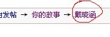

Iwzq“你的故事”杯棋人资料汇总活动启事
#1 <font color="red">Iwzq“你的故事”杯棋人资料汇总活动启事</font>作者：被感动的人 发表时间：2011-7-15 20:32:37
Iwzq“你的故事”杯棋人资料汇总活动启事
为整理五子棋资料、保留五子棋历史、更多了解五子棋人，iwzq《你的故事》版块特举办iwzq你的故事杯棋人资料汇总活动。
整理范围：棋手、推广者、研究者、在现实或网络五子棋中有一定影响的五子棋人。
汇总内容：照片、战绩、此棋人撰写的文章、关于此棋人的文章或报导。若搜集不全，可选择其中一部分内容，还可加上汇总人对该位棋人的三言两语评价。
操作提示：/*760*90，创建于2012-2-9*/ var cpro_id = 'u761865';
#2 Re:Iwzq“你的故事”杯棋人资料汇总活动启事作者：踵酃 发表时间：2011-7-15 20:58:23
 确实不错,这种任务主要是收集资料, 不过需要花大量时间。我要是只有一两威望，也会尝试收集一些。
确实不错,这种任务主要是收集资料, 不过需要花大量时间。我要是只有一两威望，也会尝试收集一些。 ［ 被感动的人 于 2011-7-15 21:01:41 时花20金币送鲜花一朵］
#3 Re:Iwzq“你的故事”杯棋人资料汇总活动启事作者：被感动的人 发表时间：2011-7-15 21:02:27
是哇是哇，新人赚威望的好机会~我也想赚的 威望不嫌多哇~
威望不嫌多哇~［此帖子已被 被感动的人 在 2011-7-16 10:40:42 编辑过］
#4 Re:Iwzq“你的故事”杯棋人资料汇总活动启事作者：花落无痕 发表时间：2011-7-15 21:08:35
威望1 不能上传‘棋人’图片［ 被感动的人 于 2011-7-15 21:10:18 时花20金币送鲜花一朵］
#5 Re:Iwzq“你的故事”杯棋人资料汇总活动启事作者：被感动的人 发表时间：2011-7-15 21:10:11
额。。。这个还真是个问题。这样吧，你先把别的资料上传，检验后先给奖励你再传照片~#6 Re:Iwzq“你的故事”杯棋人资料汇总活动启事作者：嵯峨 发表时间：2011-7-15 21:18:53
赶紧去
［ 被感动的人 于 2011-7-15 21:20:21 时花20金币送鲜花一朵］
#7 Re:Iwzq“你的故事”杯棋人资料汇总活动启事作者：被感动的人 发表时间：2011-7-15 21:43:40
打开帖子以后复制最上面的标题，就是带链接的。如图：

或者不打开帖子，在这样的界面复制：
 ，如果内容很多，可以先在word里整理好了再一起发。
，如果内容很多，可以先在word里整理好了再一起发。
#8 Re:Iwzq“你的故事”杯棋人资料汇总活动启事作者：黄药师 发表时间：2011-7-17 12:39:11
赞一个！百科全书即将诞生！［ 被感动的人 于 2011-7-17 13:54:25 时花20金币送鲜花一朵］
#9 Re:Iwzq“你的故事”杯棋人资料汇总活动启事作者：茗弈小刀 发表时间：2011-7-17 12:55:29
支持这个活动，发两个良师的吧。本来想多发几篇的，想来还是把挣威望的机会多留给新人吧。大家加油哟！
#10 Re:Iwzq“你的故事”杯棋人资料汇总活动启事作者：被感动的人 发表时间：2011-7-17 13:55:31
要真能做成百科全书，大家就方便了。
回茗弈小刀：棋人很多啊，尽情汇总吧~
#11 Re:Iwzq“你的故事”杯棋人资料汇总活动启事作者：高飞 发表时间：2011-7-20 10:50:02
不赞成这成百科。里面做的东西太没资料化，只是汇总，根本就没有整理。只有是成绩都丢一起，哪些是重要的赛事，哪些是比较小的比赛，
段位是中国棋院为标准，还是RIF为标准！？ 要么就做一个中国棋手档案起来。
［ 被感动的人 于 2011-7-20 19:25:21 时花20金币送鲜花一朵］
#12 Re:Iwzq“你的故事”杯棋人资料汇总活动启事作者：絕版賭徒 发表时间：2011-7-20 11:15:42
成绩,只要存在的就好了,管他大赛小赛,,,,懂的,不会去看,因为不看也知道,,,不懂的,更不会去看,因为看也看不懂,看懂也没用~!!~!呵呵,至于我这种在懂与不懂之间的,,,基本上对成绩一眼带过~!
［ 被感动的人 于 2011-7-20 19:25:32 时花20金币送鲜花一朵］
#13 Re:Iwzq“你的故事”杯棋人资料汇总活动启事作者：高飞 发表时间：2011-7-20 14:39:32
什么叫百科，是对事物或者人的定性介绍。是很正规的东西，主次什么都需要做到很清楚。
所以不能随意，不是因为你认为不重要就不重要，每个人眼里的价值观不一样。
［ 被感动的人 于 2011-7-20 19:25:41 时花20金币送鲜花一朵］
#14 Re:Iwzq“你的故事”杯棋人资料汇总活动启事作者：絕版賭徒 发表时间：2011-7-20 14:52:27
这是爱五子棋的一个活动,故事为主题,,,,,不是档案
［ 被感动的人 于 2011-7-20 19:25:55 时花20金币送鲜花一朵］
#15 Re:Iwzq“你的故事”杯棋人资料汇总活动启事作者：被感动的人 发表时间：2011-7-20 19:25:08
嗯，这次只是故事版的一次活动，主要是希望想了解棋人的时候能同时看到较多的资料，不敢说是百科。
艾ls说得有道理，做资料确实应该标准越高越好。故事版非常希望我们做的这一点点事能为棋人、为爱好者做点什么，感谢艾老师的建议，我们正在认真考虑怎样能做得更好。
本次活动后期会将汇总内容再做一次整理，大家希望看到怎样的汇总，欢迎提建议！
#16 Re:Iwzq“你的故事”杯棋人资料汇总活动启事作者：高飞 发表时间：2011-7-20 19:29:44
非常支持！在棋手介绍中，是用RIF段还是中国棋院的段位，这是个比较大的问题。
#17 Re:Iwzq“你的故事”杯棋人资料汇总活动启事作者：被感动的人 发表时间：2011-7-20 19:35:37
一直不清楚棋手们的段位，据网上查的资料，有的写rifn段，有的直接是段位，我一直不清楚两种段位的使用情况，棋手们的段位是两种情况（分别为rif段位和中国棋院段位）还是三种情况（是否有一部分棋手同时拥有两个系统的段位证书呢）？希望有人多多提供情况。#18 Re:Re:Iwzq“你的故事”杯棋人资料汇总活动启事作者：非黑既白 发表时间：2011-8-7 20:03:41
这么好的帖子不能沉底呀